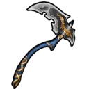

Art of Regicide
Scythe · Tier 14 · Level 42
It is a common misconception that regicide is named after kings. It is instead named after Reggie, a Reaper of great renown. It killed a lot of kings though.
Stats
Attack
1,600
Economy
Value
12,900,000
Crafting time
2d 12h
Merchant XP
405,000
Workers: Reaper 36, Carpenter 32, Master 29
Recipe


Blueprint milestones
4
-43 Ironwood
10
Crafting time -25%
18
Value +25%
30
Unlocks blueprint: Jade Faucheur
45
Quality chance +1